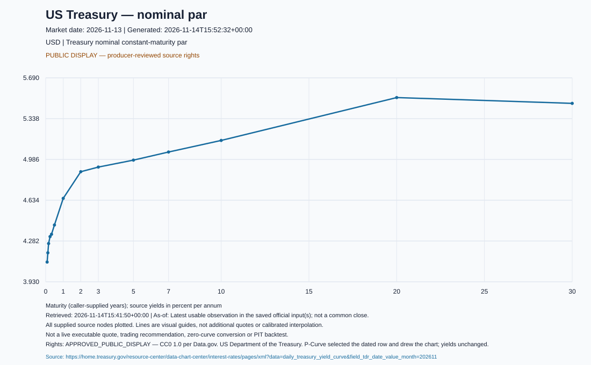
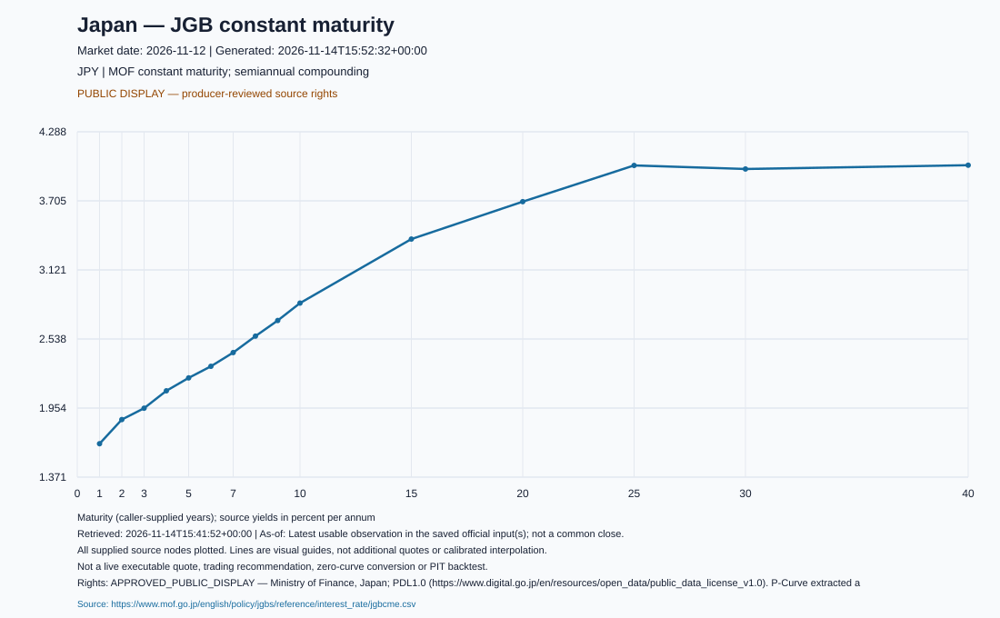

All markets
P-Curve · Sovereign archive · Public display • individually rights reviewed
Developed markets — sovereign yield curves
Generated
2026-11-14T15:52:32+00:00
· Author: pengyi
US Treasury — nominal par
— 2026-11-13 · Treasury nominal constant-maturity par
Japan — JGB constant maturity
— 2026-11-12 · MOF constant maturity; semiannual compounding
Euro area — AAA and all-ratings spot
— 2026-11-12 · ECB fitted continuous zero; AAA government issuers; ECB fitted continuous zero; all rated government issuers
Australia — nominal government yields
— 2026-11-11 · RBA F2 nominal government yields; interpolated by source
UK nominal gilt spot
— Source only; no chart or data published
Hong Kong bonds
— Source only; no chart or data published
US Treasury — nominal par

Japan — JGB constant maturity

Euro area — AAA spot
Euro area — all-ratings spot
Australia — nominal government yields